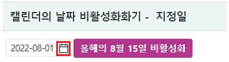
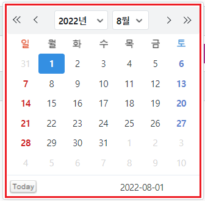
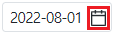
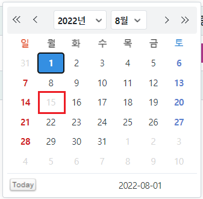
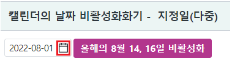
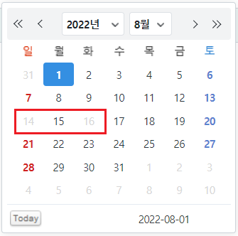
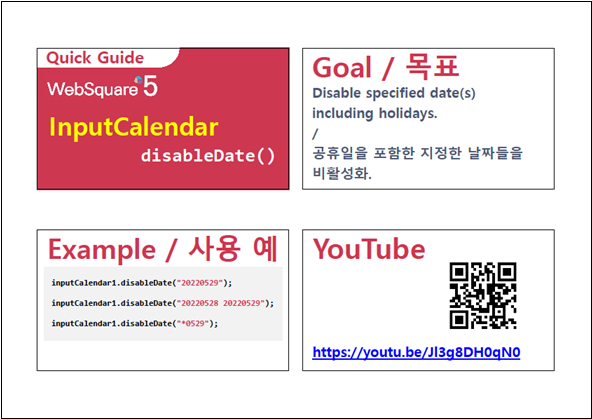

InputCalendar의 캘린더에 지정한 날짜를 비활성화하는 예제입니다.
이 기능은 사용자가 입력하는 날짜, 기 입력(할당)된 날짜에 대해서는 제어하지 않습니다.
캘린더의 날짜 비활성화화기 - 지정일
캘린더의 날짜 비활성화화기 - 지정일(다중)
영역 [캘린더의 날짜 비활성화화기 - 지정일]의 InputCalendar의 캘린더 아이콘을 클릭하여 캘린더에 출력된 날짜를 확인합니다.
초기 값은 예제 파일이 실행된 해(년)의 8월 1일 입니다.
[브라우저(Chrome) 실행 예시 - 캘린더 아이콘]

[브라우저(Chrome) 실행 예시 - 캘린더]

STEP2. 버튼 올해의 8월 15일 비활성화를 클릭합니다.
InputCalendar의 캘린더 아이콘을 클릭하여 캘린더에 출력된 날짜를 확인합니다.
올해 8월 15일이 비활성화된 것을 확인합니다.
[브라우저(Chrome) 실행 예시 - 캘린더 아이콘]

[브라우저(Chrome) 실행 예시 - 캘린더]

영역 [캘린더의 날짜 비활성화화기 - 지정일]의 InputCalendar의 캘린더 아이콘을 클릭하여 캘린더에 출력된 날짜를 확인합니다.
초기 값은 예제 파일이 실행된 해(년)의 8월 1일 입니다.
[브라우저(Chrome) 실행 예시 - 캘린더 아이콘]

[브라우저(Chrome) 실행 예시 - 캘린더]
STEP2. 버튼 올해의 8월 14, 16일 비활성화를 클릭합니다.
InputCalendar의 캘린더 아이콘을 클릭하여 캘린더에 출력된 날짜를 확인합니다.
올해 8월 14, 16일이 비활성화된 것을 확인합니다.
[브라우저(Chrome) 실행 예시 - 캘린더 아이콘]
[브라우저(Chrome) 실행 예시 - 캘린더]

원하는 시점에 스크립트를 작성합니다.
[소스 코드 예시]
//예제 파일에서는 스크립트 scwin.btn_ex1_onclick에 작성되어 있습니다. //inputCalendar "ica_exam_2"에 2022년 8월 15일 비활성화 하기 ica_exam_2.disableDate("20220815");
원하는 시점에 스크립트를 작성합니다.
[소스 코드 예시]
//예제 파일에서는 스크립트 scwin.btn_ex2_onclick에 작성되어 있습니다. //inputCalendar "ica_exam_3"에 2022년 8월 14, 16일 비활성화 하기 ica_exam_3.disableDate("20220814 20220816"); //날짜는 공백으로 구분
disableDate( dateStr )
ioFormat
inputReadOnly
[웹스퀘어5 SP5 개발 가이드] InputCalendar
링크 : https://docs1.inswave.com/sp5_user_guide/8df43d1f59fab704#579244ff7483b50c
[웹스퀘어5 SP5 개발 가이드] InputCalendar - disableDate()
링크 : https://docs1.inswave.com/sp5_user_guide/8df43d1f59fab704#14cfe43bf7d282ee
InputCalendar - disableDate()
링크 : https://youtu.be/Jl3g8DH0qN0
